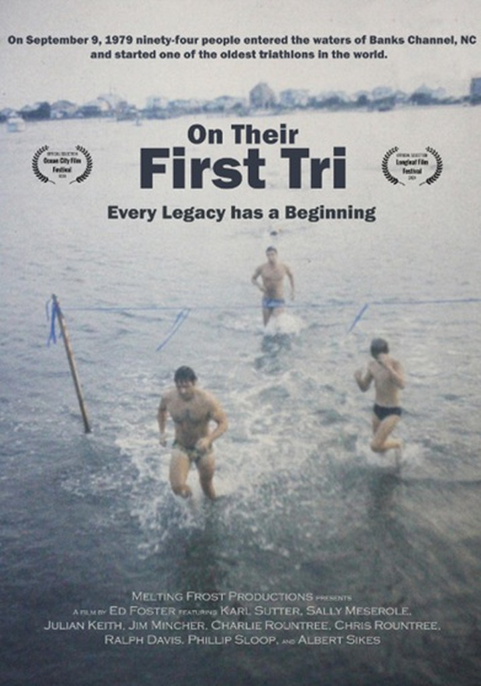
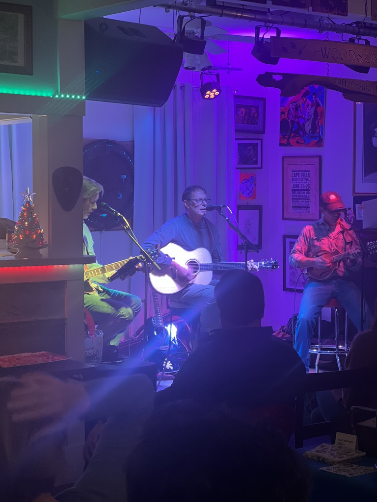

AI, Teaching, and Assessment
How should universities teach, assess, and mentor in an age of capable AI? I study faculty attitudes, adoption patterns, and practical ways to integrate AI without weakening student learning.
University of North Carolina Wilmington
Professor of Psychology at UNC Wilmington, focused on cognitive neuroscience, learning and memory, AI in education, and human-centered AI systems.
About
I started at UNC Wilmington as an undergraduate, double-majoring in Psychology and Philosophy & Religion. That pairing of mechanism and meaning has shaped my work in neuroscience, teaching, and artificial intelligence.
I earned my Ph.D. in Psychology, with a behavioral neuroscience concentration, at the University of Colorado Boulder, training with Steven Maier and Jerry Rudy. I returned to UNCW as a faculty member in 1990.
My earlier research examined neuroplasticity, hippocampal neurogenesis, memory, cardiac surgery and cognition, neurofeedback, addiction recovery, and concussion assessment technology. My current work focuses on AI in higher education and the cognitive science of artificial systems.
After seven years chairing the Department of Psychology, I returned to faculty work with new questions about cognition, learning, and human-AI collaboration.
Career Timeline
Research
My current work is organized around two questions: how AI is changing higher education, and what cognitive psychology can reveal about artificial systems.
How should universities teach, assess, and mentor in an age of capable AI? I study faculty attitudes, adoption patterns, and practical ways to integrate AI without weakening student learning.
I apply the tools of cognitive psychology to AI systems: how they learn, remember, generalize, and fail, and where artificial systems diverge from human cognition.
NIMH R01-funded work on how new neurons added to the adult hippocampus contribute to learning, memory, and recovery after brain injury, combining electrophysiology, immunohistochemistry, confocal microscopy, and behavioral analysis.
Keith, Priester, Ferguson & Salling (2008). Behavioural Brain Research, 188, 391-397. Keith & Rudy (1990). Psychobiology, 18, 251-257.NHLBI-funded studies examined cognitive outcomes related to cardiopulmonary bypass surgery and helped clarify risks in serial neuropsychological assessment.
Keith, Puente, Malcolmson, Tartt, Coleman & Marks (2002). Neuropsychology, 16, 411-421. Keith, Cohen & Lecci (2007). The Annals of Thoracic Surgery, 83, 370-373.Randomized, sham-controlled trials of automated EEG biofeedback in adults with ADHD, residents of a substance-use treatment facility, and veterans with TBI and PTSD using mobile neurofeedback for pain management.
Keith, Rapgay, Theodore, Schwartz & Ross (2015). Psychology of Addictive Behaviors, 29, 17-25. Elbogen et al., incl. Keith (2021). Pain Medicine, 22, 329-337.Validation work on accelerometer-based gait assessment and screening batteries for concussion in children, adolescents, and adults, including machine-learning models for neuropsychological research.
Keith, Williams, Taravath & Lecci (2019). A Clinician's Guide to Machine Learning in Neuropsychological Research and Practice. Journal of Pediatric Neuropsychology, 5, 177-187. Lecci et al., incl. Keith (2023). Journal of Concussion.Work on mindfulness and attention, psychometric instruments for interpersonal emotion, and contemplative practice and human enhancement.
Rapgay, Conchar & Keith (2025). Development and Validation of the Interpersonal Hate Questionnaire. Lifecycle Journal, 1. Keith, Blackwood, Mathew & Lecci (2017). Mindfulness, 93, 765-774. Keith (2018). Buddhist Biohackers: The New Enlightenment. In Posthumanism: The Future of Homo Sapiens. Macmillan.Grant Support
The goal of this study is to evaluate the effectiveness of neurofeedback for symptoms of ADHD in adults.
Role: PI
The goal of this project was to establish a clinic and research facility to treat ADHD symptoms in children using neurofeedback.
The goal of this project was to develop a large database that included neuropsychological measures taken from patients at all stages of Alzheimer's disease.
The purpose of this project was to obtain imaging technology to study neurogenesis in the adult hippocampus.
Role: Co-I
The purpose of this project was to test hypotheses regarding the functional roles of new neurons added to the hippocampus during adulthood.
The purpose of this project was to develop methods to promote recovery of function after brain injury.
Role: Co-I
The purpose of this project was to develop new methods for assessing drug effects on behavior.
Role: Co-I
The purpose of this project was to determine if cardiopulmonary bypass surgery caused persistent cognitive impairment.
Role: PI
Teaching
My teaching emphasizes critical thinking, research methods, cognitive neuroscience, and the practical use of AI as a learning partner.
Frequent talks for the Osher Lifelong Learning Institute, UNCW's Center for Innovation and Entrepreneurship, Cucalorus Connect, and area Rotary and Kiwanis clubs on brain health, Buddhism and modern psychology, and AI.
AI Projects
Custom GPTs built for students, colleagues, and curious learners. These tools support research methods, statistics, lab simulation, contemplative practice, and communication.
A mentor for experimental design, including hypotheses, variables, controls, and the logic of a well-built study.
A coach for running and interpreting analyses in jamovi, from t-tests to regression.
Simulated lab experiences for practicing the research process when students cannot be at the bench.
A companion to Buddhism and Modern Psychology that helps students deepen their understanding of course topics in Buddhist psychology, contemplative practice, and cognitive science.
Practice listening, asking better questions, and matching the conversation you are actually in.
A companion GPT for Elon University's publication Human Wisdom for the Age of AI, built with Elon's permission.
GAABS
GAABS, the Generative AI Agent Builders Studio, is the applied tool-building arm of UNCW's AI Hub. GAABS helps faculty, staff, and students turn responsible AI ideas into practical tools, workflows, agents, and learning resources that support teaching, research, operations, and student success.
GAABS is for members of the UNCW community who want to build, test, document, or share useful AI projects within appropriate policy, privacy, and data-use boundaries.
To participate, share a use case, submit a project idea, join a buildathon, or ask about collaboration by emailing gaabs@uncw.edu.
Personal
A short personal note for visitors who want a fuller picture beyond teaching and research.
On September 9, 1979, ninety-four racers waded into Banks Channel at Wrightsville Beach for one of North America's first triathlons. I was one of them. That same year I ran my first marathon, qualified for Boston as a teenager, and ran the Boston Marathon the following spring.
The 1979 race and nine of its original competitors are the subject of the 2024 documentary On Their First Tri.
Watch the documentary | View on IMDb


I am a member of The Noseeums, a Wilmington band playing y'allternative music around town a few times a month.